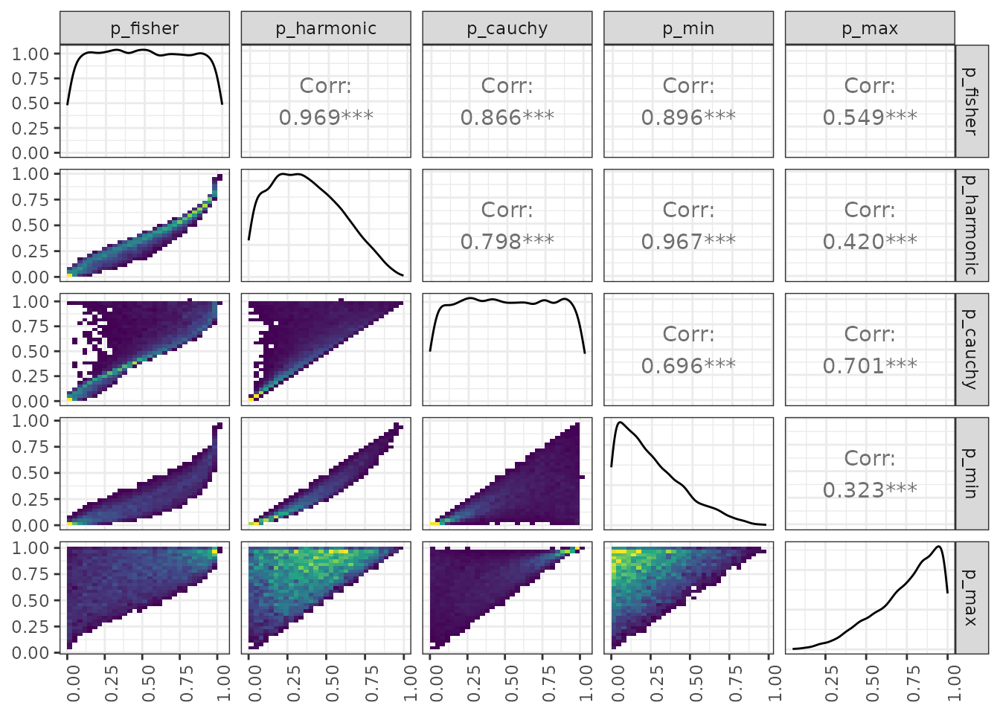

vignettes/study-compare-p-value-combine-methods.Rmd
study-compare-p-value-combine-methods.RmdIn Stamp et al. (2023)1 we discuss the meta analysis of the pariwise comparison -values that mvMAPIT gives. We provide three methods to compute a per-variant combined -value:
The Fisher’s method requires independent -values. The other two tests handle arbitrary covariances between the -values. Here we show how these three methods compare empirically when applied to the same -values.
Draw random uniform -values from [0, 0.05].
n_variants <- 10000
n_combine <- 3
pvalues <- tidyr::tibble(
id = rep(as.character(c(1:n_variants)), each = n_combine),
trait = rep(as.character(c(1:n_combine)), n_variants),
p = runif(n_variants * n_combine, min = 0, max = 1)
)Use the provided methods to compute the meta analysis -values.
cauchy <- cauchy_combined(pvalues) %>%
rename(p_cauchy = p) %>%
select(-trait)
fisher <- fishers_combined(pvalues) %>%
rename(p_fisher = p) %>%
select(-trait)
harmonic <- harmonic_combined(pvalues) %>%
rename(p_harmonic = p) %>%
select(-trait)
min_max <- pvalues %>%
group_by(id) %>%
summarise(p_min = min(p), p_max = max(p))
combined_wide <- fisher %>%
left_join(harmonic) %>%
left_join(cauchy) %>%
left_join(min_max) %>%
select(-id)
# Joining with `by = join_by(id)`
# Joining with `by = join_by(id)`
# Joining with `by = join_by(id)`The figure shows the data distribution on the diagonal and paired 2D historgam plots for all combinations of -values. The brighter yellows correspond to higher counts, the green is in the middle of the scale, and the darker blues correspond to the low values of the histogram.
my_bin <- function(data, mapping) {
ggplot(data = data, mapping = mapping) +
geom_bin2d() +
scale_fill_continuous(type = "viridis")
}
ggpairs(combined_wide, columns = 1:5,
lower = list(continuous = my_bin)) +
theme_bw() +
theme(axis.text.x = element_text(angle=90, hjust=1))
# `stat_bin2d()` using `bins = 30`. Pick better value `binwidth`.
# `stat_bin2d()` using `bins = 30`. Pick better value `binwidth`.
# `stat_bin2d()` using `bins = 30`. Pick better value `binwidth`.
# `stat_bin2d()` using `bins = 30`. Pick better value `binwidth`.
# `stat_bin2d()` using `bins = 30`. Pick better value `binwidth`.
# `stat_bin2d()` using `bins = 30`. Pick better value `binwidth`.
# `stat_bin2d()` using `bins = 30`. Pick better value `binwidth`.
# `stat_bin2d()` using `bins = 30`. Pick better value `binwidth`.
# `stat_bin2d()` using `bins = 30`. Pick better value `binwidth`.
# `stat_bin2d()` using `bins = 30`. Pick better value `binwidth`.
J. Stamp, A. DenAdel, D. Weinreich, L. Crawford (2023). Leveraging the Genetic Correlation between Traits Improves the Detection of Epistasis in Genome-wide Association Studies. G3 Genes|Genomes|Genetics, 13(8), jkad118; doi: https://doi.org/10.1093/g3journal/jkad118↩︎
Fisher, R.A. (1925). Statistical Methods for Research Workers. Oliver and Boyd (Edinburgh). ISBN 0-05-002170-2.↩︎
Wilson, D.J., 2019. The harmonic mean p-value for combining dependent tests. Proceedings of the National Academy of Sciences, 116(4), pp.1195-1200. https://doi.org/10.1073/pnas.1814092116↩︎
Liu, Y. and Xie, J., 2020. Cauchy combination test: a powerful test with analytic p-value calculation under arbitrary dependency structures. Journal of the American Statistical Association, 115(529), pp.393-402. https://doi.org/10.1080/01621459.2018.1554485↩︎